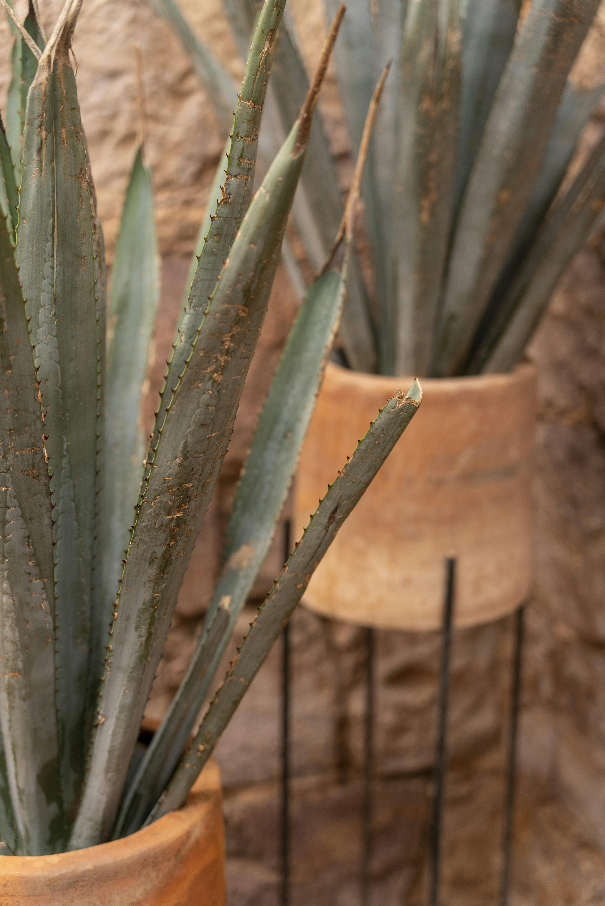

Nuestros Servicios
Elija entre las siguientes opciones:

Cafetería y Brunch
En GREEN Brunch contamos con un amplio menú de desayunos, brunchs y meriendas. Además, incluimos menú apto para celiacos y veganos para que todos puedan disfrutar de este rincón verde en la ciudad.

Vivero
Plantas de interior y exterior
En GREEN Brunch vas a poder disfrutar de exquisitos platos y cafés rodeado de verde, para poder descansar un poco del ruido de la ciudad. La idea fue crear un espacio tranquilo y de conciencia sobre la importancia de los espacios verdes.

Giftcard (Válido para merienda)
¿No sabes qué regalarle a esa persona especial? Qué mejor que una merienda donde pueda disfrutar de café y cosas ricas en un espacio tranquilo.